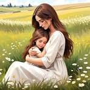

mother
A mother is the female parent of a child. A woman may be considered a mother by virtue of having given birth, by raising a child who may or may not be her biological offspring, or by supplying her ovum for fertilisation in the case of gestational surrogacy. A biological mother is the female genetic contributor to the creation of the infant, through sexual intercourse or egg donation. A biological mother may have legal obligations to a child not raised by her, such as an obligation of monetary support. An adoptive mother is a female who has become the child's parent through the legal process of adoption. A putative mother is a female whose biological relationship to a child is alleged but has not been established. A stepmother is a non-biological female parent married to a child's preexisting parent, and may form a family unit but generally does not have the legal rights and responsibilities of a parent in relation to the child. A father is the male counterpart of a mother. Women who are pregnant may be referred to as expectant mothers or mothers-to-be.[1][2] The process of becoming a mother has been referred to as "matrescence".[3] The adjective "maternal" refers to a mother and comparatively to "paternal" for a father. The verb "to mother" means to procreate or to sire a child, or to provide care for a child, from which also derives the noun "mothering".[4] Related terms of endearment are mom mama, mommy, mum mummy, mumsy, mamacita ma, mama and mammy. A female role model that children can look up to is sometimes referred to as a mother-figure.
